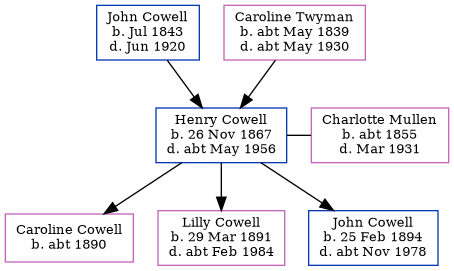

Henry John Cowell 1867 - c1956
[ Home ] | [ Calendar ] | [ Surnames Index ] | [ Errors ] | [ Family History ]A shepherd and labourer in cement works and the child of John Cowell (a labourer) and Caroline Twyman, Henry Cowell, the first cousin three-times-removed on the mother's side of Nigel Horne, was born in Wickhambreaux, Kent, England on 26 Nov 18671,2,3,4,5,6,7, was baptised there on 29 Dec 1867 and married Charlotte Mullen (with whom he had 3 children: Caroline Grace, Lilly Clara and John William) in Malling, Kent, England around May 18909 (Apr/May/Jun).
During his life, he was living at London Road, Ditton, Kent on 2 Apr 187111; on Orchard Terrace, New Hythe Road, East Malling, Kent on 3 Apr 188110; on Lunsford Lane, Lemsford, Kent on 5 Apr 189112; in Larkfield, Kent, England on 31 Mar 190113; at 3 Illogan Terrace in Larkfield on 2 Apr 191114; at Illogan Terrace in Larkfield on 19 Jun 192115; and at 3 Illogan Terrace in Larkfield on 29 Sept 19396 following the death of his wife in Mar 1931. In 1921 he was working at George Eagleton Farmer in East Malling, Kent, England.
He died c. May 1956 in Maidstone, Kent, England8.
Parents
- John was born in Jul 1843
- Caroline was born c. May 1839
Children
- Caroline Grace was born c. 1890
- Lilly Clara was born on 29 Mar 1891
- John William was born on 25 Feb 1894
Citations
- 1871 England Census Online publication - Provo, UT, USA: The Generations Network, Inc., 2004.Original data - Census Returns of England and Wales, 1871. Kew, Surrey, England: The National Archives of the UK (TNA): Public Record Office (PRO), 1871. Data imaged from the National
- 1881 England Census Online publication - Provo, UT, USA: The Generations Network, Inc., 2004. 1881 British Isles Census Index provided by The Church of Jesus Christ of Latter-day Saints © Copyright 1999 Intellectual Reserve, Inc. All rights reserved. All use is subject to the
- 1891 England Census Online publication - Provo, UT, USA: The Generations Network, Inc., 2005.Original data - Census Returns of England and Wales, 1891. Kew, Surrey, England: The National Archives of the UK (TNA): Public Record Office (PRO), 1891. Data imaged from The National
- 1901 England Census Online publication - Provo, UT, USA: The Generations Network, Inc., 2005.Original data - Census Returns of England and Wales, 1901. Kew, Surrey, England: The National Archives of the UK (TNA): Public Record Office (PRO), 1901. Data imaged from the National
- 1911 England Census Online publication - Provo, UT, USA: Ancestry.com Operations, Inc., 2011.Original data - Census Returns of England and Wales, 1911. Kew, Surrey, England: The National Archives of the UK (TNA), 1911. Data imaged from the National Archives, London, England.
- 1939 Register - Findmypast (was recorded at this address)
- England & Wales, FreeBMD Birth Index, 1837-1915 Online publication - Provo, UT, USA: The Generations Network, Inc., 2006.Original data - General Register Office. England and Wales Civil Registration Indexes. London, England: General Register Office. © Crown copyright. Published by permission of the Cont
- England & Wales deaths 1837-2007 - Findmypast
- 1911 England Census Online publication - Provo, UT, USA: Ancestry.com Operations, Inc., 2011.Original data - Census Returns of England and Wales, 1911. Kew, Surrey, England: The National Archives of the UK (TNA), 1911. Data imaged from the National Archives, London, England.
- 1881 England, Wales & Scotland Census - Findmypast (was age 13 and the son of the head of the household)
- 1871 England, Wales & Scotland Census - Findmypast (was age 3 and the son of the head of the household)
- 1891 England, Wales & Scotland Census - Findmypast (was age 23 and the head of the household)
- 1901 England, Wales & Scotland Census - Findmypast (was age 33 and the head of the household)
- 1911 Census for England & Wales - Findmypast (was age 43 and the head of the household)
- 1921 Census Of England & Wales - Findmypast (was age 53 and the head of the household)
Media
1881 England, Wales & Scotland Census - GBC/1881/0004492702
1939 Register - TNA/R39/1831/1831D/015/22
England & Wales deaths 1837-2007 - BMD/D/1956/2/AZ/000199/017
England & Wales births 1837-2006 - BMD/B/1867/4/AZ/000126/040
England & Wales marriages 1837-2008 - BMD/M/1890/2/AZ/000070/259
1891 England, Wales & Scotland Census - GBC/1891/0005472919
1901 England, Wales & Scotland Census Transcription - GBC-1901-0006113672
England Births & Baptisms 1538-1975 - R_885888454
Family Tree
Map
Generated by ged2site. Last updated on Jul 3, 2024
Known Issues
Missing house number (3) in 1921 that was known in 1911